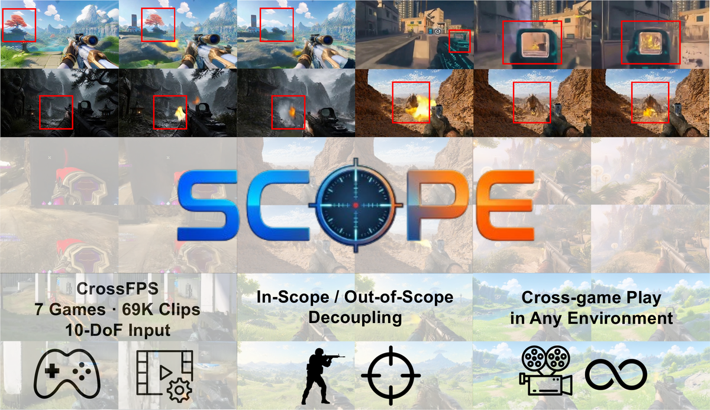

2026
SCOPE: Simulating Cross-game Operations in Playable Environments for FPS World Models
An interactive FPS world model with dense per-frame control, trained on CrossFPS across seven games.

Ph.D. Student · University of Chinese Academy of Sciences (UCAS)
Visiting Ph.D. Student · Peking University (PKU) · Currently with Meituan LongCat Team
Hello! I am a Ph.D. student in Computer Science at the University of Chinese Academy of Sciences, advised by Prof. Ling Shao and Prof. Hao Tang. I am also a visiting Ph.D. student at Peking University.
My research focuses on world models, video generation, and Physical AI. I am broadly interested in interactive video world models, robotic world models, multimodal reasoning, and the geometry and dynamics needed to make generative models useful for embodied intelligence.
Research interests · World models · Video generation · Robotics · Multimodal reasoning · Physical AI

A selection of research on interactive generation, world models, and multimodal intelligence. For a fuller list, see arXiv.
An interactive FPS world model with dense per-frame control, trained on CrossFPS across seven games.

Natural-language action control for interactive multi-entity video generation and cross-entity transfer.
Game-agnostic player–NPC interactions with steerable high-level NPC behavior.
Parallel test-time reasoning strategies for multimodal visual comprehension.
Meituan · LongCat TeamMachine Learning Researcher
Video world models.
Tencent · IEGMachine Learning Researcher
Interactive video world models for games (SCOPE).
Li AutoMachine Learning Engineer
World models for autonomous driving.
AgiBotMachine Learning Engineer
Robotic world models and generalization.
MIT · CSAILResearch Assistant
Computational Design & Fabrication Group · Prof. Wojciech Matusik.
Beijing Academy of Artificial Intelligence (BAAI)Machine Learning Engineer
Multimodal large language models.
Huazhong University of Science and TechnologyResearch Assistant
Low-bit LLM quantization · Prof. Long Zheng.
Peking University · Shenzhen Graduate SchoolResearch Assistant
PKU-Yuan Group · Prof. Li Yuan.
University of Science and Technology of ChinaResearch Assistant
Advanced Data Systems Laboratory · Prof. Cheng Li.
Huazhong University of Science and TechnologyResearch Assistant
In-memory indexing systems · Prof. Qiang Cao.
University of Chinese Academy of SciencesPh.D. in Computer Science
Advisors: Prof. Ling Shao and Prof. Hao Tang · National Scholarship (2025).
Peking UniversityVisiting Ph.D. Student
Advisor: Prof. Hao Tang · Video generation and world models.
Huazhong University of Science and TechnologyB.Eng. in Computer Science
I welcome conversations and collaborations on video generation, world models, robotics, and spatial intelligence. Please connect through LinkedIn, GitHub, or Hugging Face.